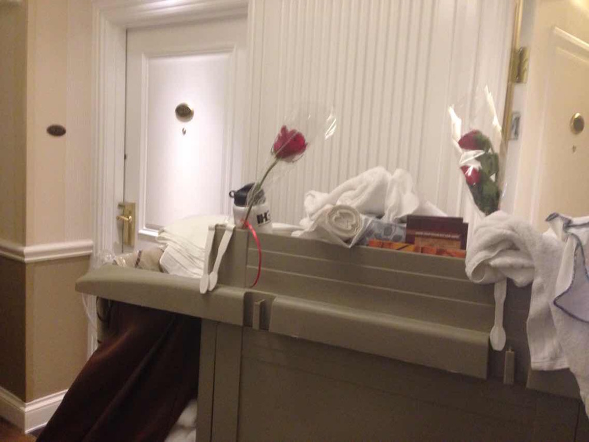
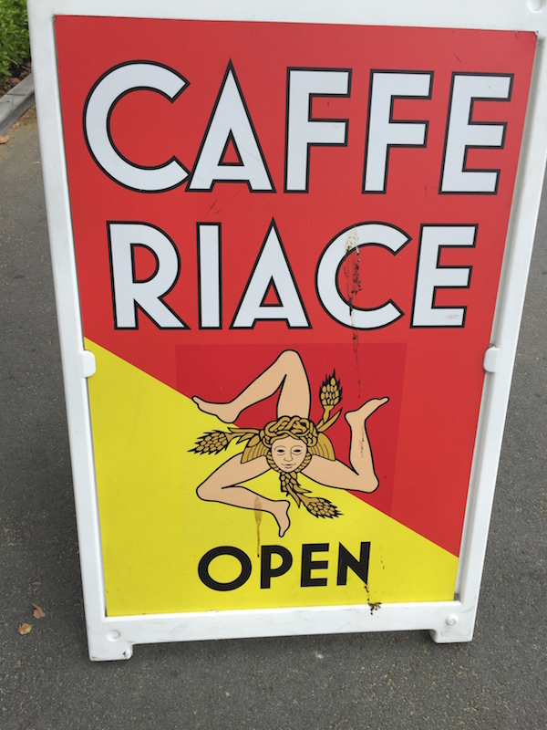
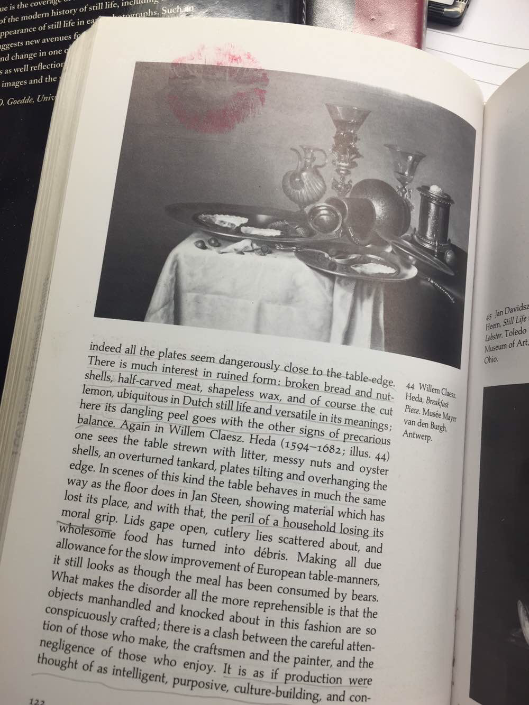
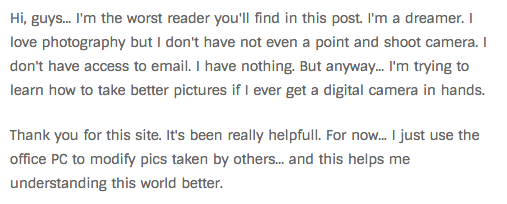
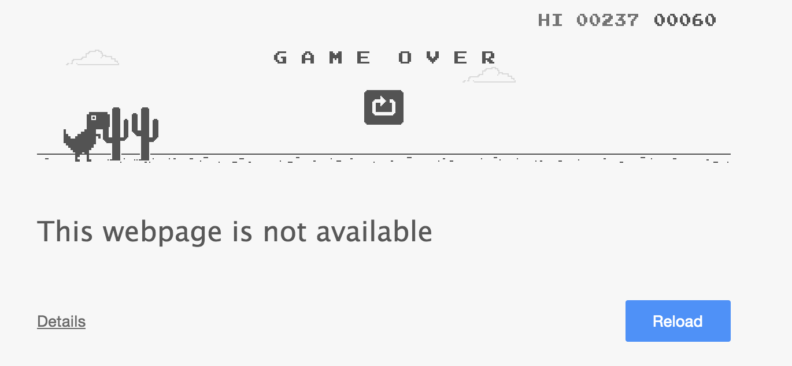

When I realize my love of visual art and graphics, I start to spend lots, lots and lots of time browsing online to search all the great visual art and graphics work and thinking what make those work different from great work to master piece. Those days I was totally shocked by the old time graphics art work. They are so thoughtful and polished. Yes, I agree, when the time is slow, we do more great things. I think I start to understand the concept that keep busy but slow down. A friend suggests me to read a book called "Thinking, Fast and Slow". Maybe I need to start reading that. Recode Project Graphics Artists in 70s and 80s
Errr
March 31, 2015
I used to think what is the opposite word of "sexy", and the best answer I got is "errr..". I found "Errr" is a powerful word that fits in many situations. I went to Las Vegas alone to see one of my favorite comdies Whitney Cummings tow months ago, and so many "errr" moments you discovered when you go to the sin city alone.
There are many fat women and guys wearing dirty T-shirt saying "Sexy and Beautiful Ladies" on their back and sending small advertiments. I really doubt the words "sexy" and "beautiful".
One day morning, when I open my hotel door. I saw this. It seems romance is really cheap here. Those people bought the flowers but they don't know what is love. Roses are not growing up for this.

Welcome Back + Push / Pop iOS function
March 31, 2015
As I said I was busy with my app developing last month, so don't have time to write my blog. Now I am comming back!! After fighting with the iOS design and implementation for a while. I got some animation and design tricks, and hope to help others who are struggling with the same problem and save you time a little bit.
1. PUSH / POP from other directions
iOS default push is from the right. To change to the other direction, define a custom segue and assign a class for it. For example, if you want the push from left, define class:
@objc(LeftPushSegue)
class LeftPushSegue: UIStoryboardSegue {
override func perform() {
var sourceViewController = self.sourceViewController as UIViewController
var destinationViewController = self.destinationViewController as UIViewController
let transition = CATransition()
transition.type = kCATransitionPush
transition.subtype = kCATransitionFromLeft
sourceViewController.navigationController?.view.layer.addAnimation(transition, forKey: kCATransition)
sourceViewController.navigationController?.pushViewController(destinationViewController, animated: false)
}
}
And in the controller that pushed in, add guesture recognizer:
let popGestureRecognizer = UISwipeGestureRecognizer()
I love pasta. The food of large portion, full of source. It deliveries the passion for the life. I am lucky that there is a very, very good Italian resturant just nearby my office. I went to it many times. But today i saw its poster! Oh my, love it more!!

MUA
March 13, 2015
A friend of mine shared this. It becomes one of my favorite images. I love it, too. Totally get your felling, MUA!

Crazy New Year
February 18, 2015
Coming back home quite late today, actually very late these days. Very, very busy working on my sweet app. It seems like the relationship between us is moving from infatuation stage to conflict stage. Fighting with it whole day... She is really hard to understand sometime.
N/A
January 31, 2015
Balance, that's the secret. Moderate extremism.
Truth is Singular
January 31, 2015
Truth is singular. Its versions are mistruths. I realized a truth that makes me disappointed and sad, trying to think up some excuses for that but no one works out. Anyway, as Edward Abbey says "Better a cruel truth than a comfortable delusion."
A Post
January 30, 2015

Found a really unbelievable post on Digital Photography School. Everything may have special meanings for others. Let's a very old post on 2009, I hope he got his camarea now.
Small Plan
January 28, 2015
Stanford is a wonderful playground in the night. Just came up a small challenge that skating with high heels some day.
Feeling
January 26, 2015
WoW
January 23, 2015

Hard to believe that's a game!
Hello New Home
January 22, 2015
I built a new home here. In the Internet galaxy, here is my planet now. Occupied!